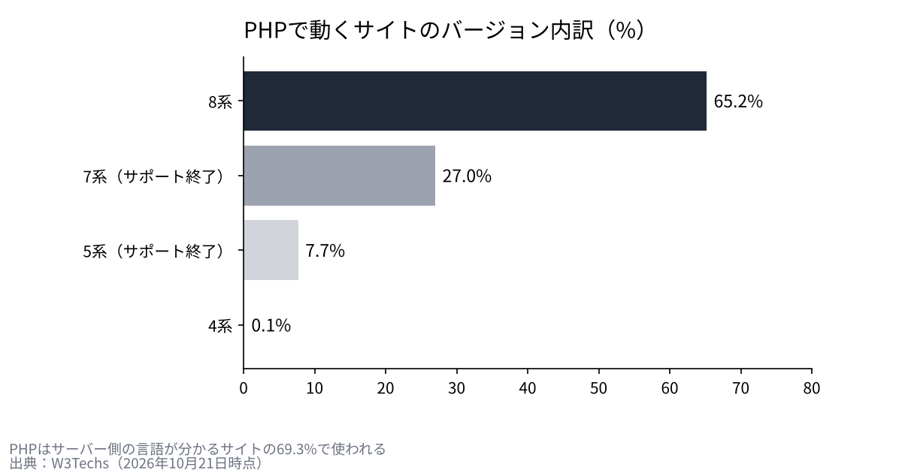
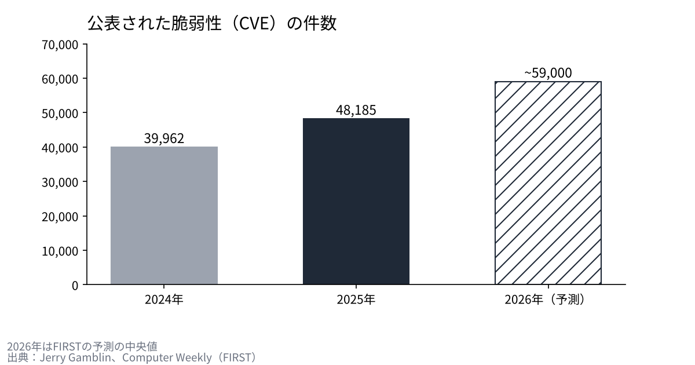

PHP2Shellの48時間。ウェブの7割を支える言語の欠陥は、どう見つかり、どう塞がれたのか
2026年10月21日の夜、ウェブサイトを動かす言語PHPに、認証なしで乗っ取りにつながる欠陥が2件あると公表された。
予告から修正版の公開、国内サービスの一斉停止までを、開発元と公的機関の一次資料で時系列に並べる。
欠陥の仕組み、AIが果たした役割、そしてこれから起きうることを、僕は自分の会社の守りと重ねて確かめておく。

予告から修正版まで、何が起きたのか
発端は、公表の予定より早く情報が漏れたことだった。10月20日の15時20分（世界標準時）ごろ、技術系の掲示板に2件の公開を予告する投稿が出て、のちに削除された。開発元のPHPセキュリティチームは、同じ日の19時33分（日本時間21日4時33分）に、メーリングリストでリリースを予告した。
予告の中身は、共通の評価基準CVSS v4.0で9.2点の欠陥が2件あること、修正版を21日14時（日本時間23時）に出すことだった。詳細が漏れたり悪用が確認されたりすれば前倒しする、とも書かれていた。
日本では21日の昼から動きが加速した。IPAは棚卸しを呼びかける「事前準備のお願い」を出し、15時50分にはネットショップの開設サービスが緊急停止に入った。夜には首相がXで「今夜に対応して頂きたい大至急のお願い」と投稿し、直せない場合はサイトの一時停止も有効だと伝えた。
修正版の8.5.12、8.4.27、8.3.36、8.2.35は、日本時間の22時30分から23時ごろに公開された。報じる媒体によって時刻は少しずれている。翌22日の朝には、停止したサービスの多くが再開に向かった。
| 日時（日本時間） | 出来事 | 出典 |
|---|---|---|
| 10/21 04:33 | PHPセキュリティチームがリリースを予告 | php.announce/509 |
| 10/21 午後 | IPAが事前準備と棚卸しを呼びかけ | IPA |
| 10/21 15:50 | ネットショップ開設サービスが緊急停止 | 事業者の告知 |
| 10/21 21:55ごろ | 首相がXで対応とサイトの一時停止を呼びかけ | Impress Watch |
| 10/21 22:30〜23:00 | 修正版8.5.12／8.4.27／8.3.36／8.2.35を公開 | php.net、CERT-EU |
| 10/22 08:00 | 停止したサービスの再開が始まる | 事業者の告知 |
国内で止まったもの
piyologの集計では、告知で確認できただけで54の組織が対応した。サービス全体を止めたのが20、一部の機能を止めたのが7、自社や団体のサイトを止めたのが27だった。ネットショップの開設サービス、保育園向けの連絡アプリ、人気のゲーム、厚生労働省の介護サービス情報公表システム、大学、鉄道会社まで並ぶ。
銀行では、静岡銀行がネットバンキングを予防的に止め、21日23時の時点で被害は確認されていないと伝えられた。止めた事業者の多くは、攻撃や漏えいは確認されていないと説明している。被害が出たから止めたのではなく、修正版を当てて確かめるまで扉を閉めた形だった。

欠陥の中身：メモリ不足と、消え残る状態
1件目のCVE-2026-109618は、メモリが足りなくなったときの処理にある。PHPは上限を超えるとリクエストを途中で打ち切るが、そのとき内部のデータが初期化の途中で残る。後片付けの処理が、この壊れたデータを正しいものとして扱ってしまう。ファイルを送るフォームの解析を使えば、外からわざとメモリ不足を起こせる。
2件目のCVE-2026-109619は、前のリクエストの状態が、メモリを解放した後も残る問題だ。同じ作業プロセスが次のリクエストを処理するとき、片付けられていない状態を使ってしまう。初期設定で有効なアップロードの進捗機能が、その経路の1つになる。
どちらも、攻撃者は認証なしで、ネット越しにサーバー上でコードを動かせる。最も危ないのはApacheのmod_phpで、アプリのコードが動く前に、1回のリクエストで攻撃が成り立つことが実証されている。開発元は「完全な緩和策はなく、更新が唯一の安全な選択」としている。
なぜ影響が「ウェブの7割」になるのか
W3Techsの集計では、サーバー側の言語が分かるサイトの69.3%がPHPで動いている。WordPressだけで全サイトの39.6%を占め、DrupalやJoomlaも同じ言語の上にある。研究者は、この3つでログイン前の乗っ取りを実証した。
ただし「7割」は利用率の数字で、脆弱なサイトの実数ではない。問題は古い版の多さにある。PHPのサイトのうち、サポートが終わった7系が27.0%、5系が7.7%を占める。今回の公式の修正版は8.2以降だけで、8.1以前には最小限のソースパッチしか出ていない。8.2のサポートも2026年12月31日に終わる。

AIは何をしたのか
OpenAIの公表によると、研究企業のCalifがGPT-5.6 Solを使って最初の欠陥を見つけた。作業の開始は7月30日、発見は8月1日、開発元への報告は8月11日だった。Wizも8月19日に別々に見つけ、Gemini 4 Argonなどを使ったと書いている。
大事なのは、AIだけで見つけたわけではない点だ。Califの記録では、仮説を立てたのは人間で、2004年に別の研究者が見つけた不具合を手がかりにしている。AIは、メモリ管理のコードを読み込み、具体的な不具合を探し当てる役を担った。元になったメモリ不足の欠陥は2020年に知られていたが、乗っ取りまで届くとは示されていなかった。
発見から公開までは約2か月半あった。その間、開発元と発見者、クラウド事業者が修正を調整していた。見つける力が上がるほど、この調整の速さが守りの要になる。
悪用は確認されたのか
答えは、出典によって分かれている。IPAは21日の時点で攻撃を確認していないとし、Huntressも自社の環境では見ていないとした。一方でwatchTowrは、自社のおとりサーバーで悪用を観測したと更新している。米国の悪用確認リスト（KEV）には、調べた時点で載っていない。
確かなのは、修正版の公開前から、悪用できると主張するコードが出回り始めていたことだ。公開と同時に攻撃が始まる前提で動いた事業者の判断は、結果として合理的だったと言える。
これから起きうること
1つ目は、同じ型の発見が続くことだ。公表された脆弱性の数は、2024年の39,962件から2025年には48,185件に増え、2026年は約5万9千件と予測されている。AIが古いコードを読み直すほど、何年も眠っていた欠陥が表に出る。
2つ目は、修正までの猶予が縮むことだ。米国では、最も危ない脆弱性を3日以内に直すよう連邦機関に求める指令が出たと報じられている。公表から悪用までが数時間になる前提で、運用を組み直す必要がある。
3つ目は、古い版を使い続ける費用が上がることだ。サポートの切れた版は、次の欠陥が見つかっても公式の修正が届かない。更新を先送りした分だけ、止めるか作り直すかの選択を迫られる。小さな会社ほど、自社のサイトや予約の仕組みがどの版で動いているかを、委託先に確かめておく価値がある。

僕はこう見ている
僕はシェアオフィスを経営していて、会員の情報は外部のサービスで管理している。自社では持たない形にしているのは、情報を持つほどリスクが上がると考えているからだ。それでも22日の朝、運用を任せている会社に「うちは問題ないですか」と連絡した。
今回の件で、ITにも建物と同じ修繕の考え方が要ると感じた。外壁や設備は、壊れる前に積み立てて替える。ソフトウェアも、サポートが切れる前に替える費用を先に用意しておく。
AIは、守る側にも攻める側にも同じ速さを与える。僕は、見つかる速さが上がる時代に、直す速さと止める判断の速さで差がつくと見ている。会社を選ぶときも、投資先を選ぶときも、その速さを見ていきたい。
出典
- PHP公式「Critical remote code execution vulnerabilities, update now」 https://www.php.net/archive/2026.php
- PHP セキュリティ予告（php.announce/509） http://news-web.php.net/php.announce/509
- PHP サポート中のバージョン https://www.php.net/supported-versions.php
- GitHub GHSA-w8hw-w9fx-j79w（CVE-2026-109618） https://github.com/php/php-src/security/advisories/GHSA-w8hw-w9fx-j79w
- GitHub GHSA-6wmf-4rv5-p3rp（CVE-2026-109619） https://github.com/php/php-src/security/advisories/GHSA-6wmf-4rv5-p3rp
- IPA「PHPのセキュリティリリース公開予定について」 https://www.ipa.go.jp/security/security-alert/2026/pre-alert20261021.html
- CERT-EU Security Advisory 2026-018 https://cert.europa.eu/publications/security-advisories/2026-018/
- OpenAI「Coordinated disclosure of critical vulnerabilities」 https://openai.com/index/coordinated-disclosure-of-critical-vulnerabilities/
- Calif「PHP2Shell」 https://calif.io/php2shell/
- Wiz「PHP2Shell」 https://www.wiz.io/blog/php2shell-php-rce
- watchTowr「CVE-2026-109618 FAQ」 https://watchtowr.com/intelligence/php-cve-2026-109618-faq/
- Huntress https://www.huntress.com/blog/php2shell-leaked-critical-php-vulnerabilities
- W3Techs（PHPの利用率） https://w3techs.com/technologies/details/pl-php
- W3Techs（CMSのシェア） https://w3techs.com/technologies/overview/content_management
- Jerry Gamblin「2025 CVE Data Review」 https://jerrygamblin.com/2026/01/01/2025-cve-data-review/
- Computer Weekly（FIRSTの2026年予測） https://www.computerweekly.com/news/366638949/CVE-volumes-may-plausibly-reach-100000-this-year
- Cloud Security Alliance（BOD 26-04の要約） https://labs.cloudsecurityalliance.org/research/csa-research-note-bod-2604-ai-accelerated-patch-mandate-ente/
- piyolog（国内の停止の集計） https://piyolog.hatenadiary.jp/entry/2026/10/21/174516
- Impress Watch https://www.watch.impress.co.jp/docs/news/2150159.html
写真：Taylor Vick／Ilya Pavlov（Unsplash）。図はYUKI CAPITALが作成
日々の数字と判断は、Xで記録している。